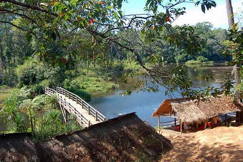
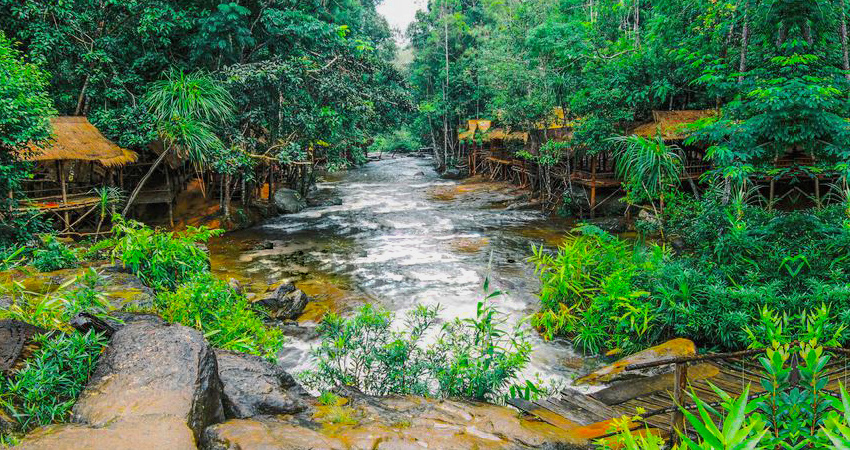

Located at Phnom Sruoch district in the province of Kampong Speu, Kirirom National Park is established on
a seven hundred meters hill covering an area of over thirty five thousand hectares in the Elephant
Mountains. The name 'Kirirom' meaning Mountain of Joy was given to it by the King of Cambodia. Kirirom
National Park, a high altitude plateau, is known for its unique high elevation pine forest, which forms
the headwaters for numerous streams feeding Kampong Speu Town.
This park is part of the 'Southwest Cluster Protected Areas' which include Phnom Bokor, Preah Sihanouk
and Kep National Parks. Attractions at this hill station of Kirirom are its spectacular scenery and its
astonishing waterfalls.
This park is also the home to many endangered species of animals such as Pleated gibbon, sun bear and
tiger . You can take a ride in the traditional ox-cart ride or trek along the walking trails among the
pine trees. Since this natural resort is located one hundred and twenty kilometers to the west of Phnom
Penh, visitors can hire taxis to get here. Traveling along National Road No. 4 will also get you here.

The Kirirom National Park, whose official name is Preah Suramarith Kossmak, is about 80,000 acres of
forested land on a rare plateau in southwestern Cambodia.
The elevation is about 2,200 feet, high enough to support a large pine forest quite distinct from most
of the country's tropical jungle. Our last stop in the park was a newly renovated visitors center which
was small but quite impressive.
The visitors center has some really attractive displays although there are too many for such a small
space. Still it was refreshing to see such high standards applied to the center.